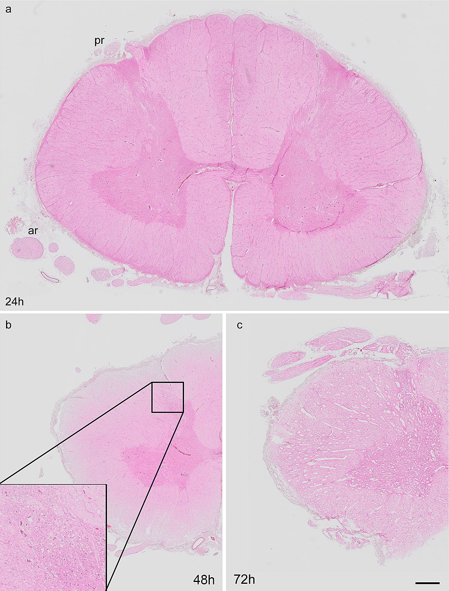

Chapter 22 · human H&E histology
See a real cord cross-section
The central grey-matter horns and surrounding white matter are visible in panel a, a prepared human cervical cord section. Pink and purple come from hematoxylin–eosin staining, not natural living tissue colour.


a · 24 h postmortem: full cross-section with preserved overall architecture according to the authors.
b · 48 h postmortem: half-section with small tissue gaps; inset retained.
c · 72 h postmortem: half-section with larger gaps and loss of sharp tissue boundaries.
Grey / white matter: relative tissue compositions. These are not a cell-type count or a map of every tract.
The times label different donor groups, not successive scans of the same cord. Preparation-related gaps and fading must not be taught as normal living compartments or as a measured disease trajectory. No physiological animation is inferred from these stills.
Read the preparation with the image
The study collected cervical segments C4–C6 from 15 body donors, five per postmortem interval group. The cohort included seven women and eight men aged 58–103 years without a reported history of neurological disorders. Exact age, sex and segment of the illustrated section are not assigned. Tissue was immersion-fixed in 4% paraformaldehyde for 24 hours at 4 °C, cryoprotected, frozen and cut into 10 µm sections for H&E staining. The study's separate 2-hour thoracic organ-donor control is not this panel a.
These sections do not identify a patent adult central canal, every lamina, measured neural activity, complete meninges or a functional root-to-muscle circuit. Gross posterior dissections elsewhere in the chapter are independent specimens and are not registered enlargements of this slide.